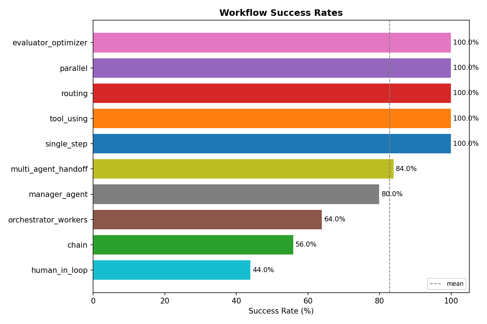
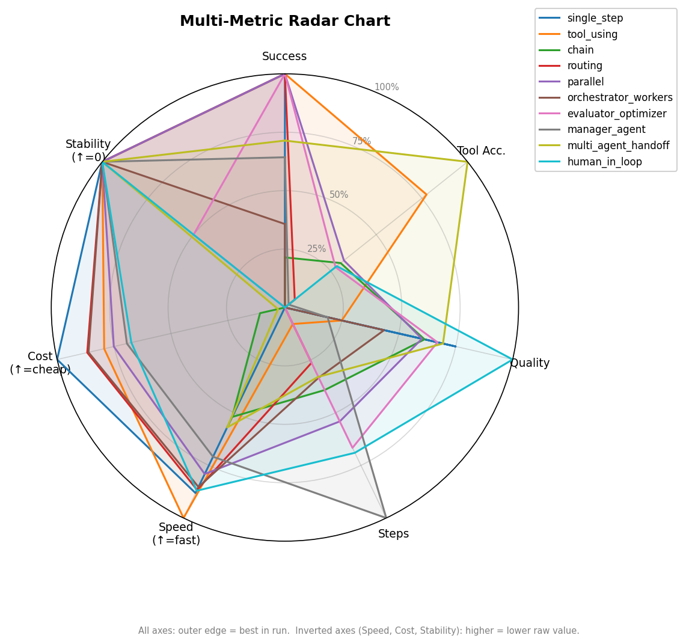
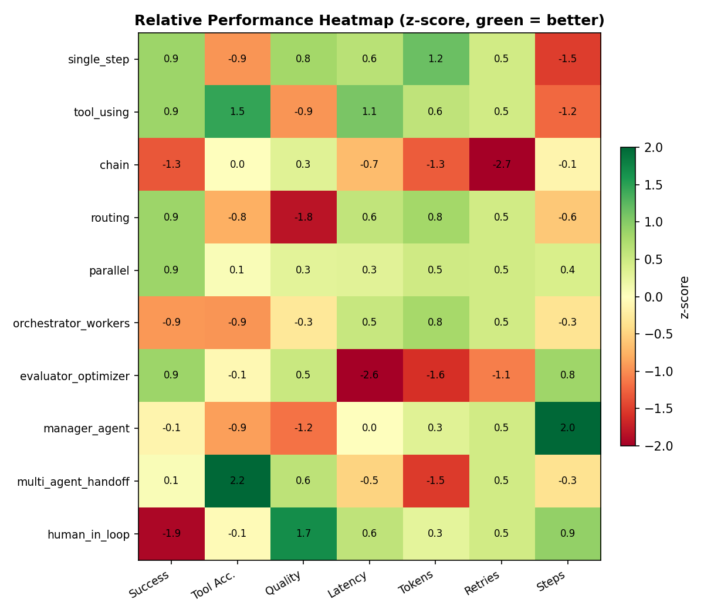
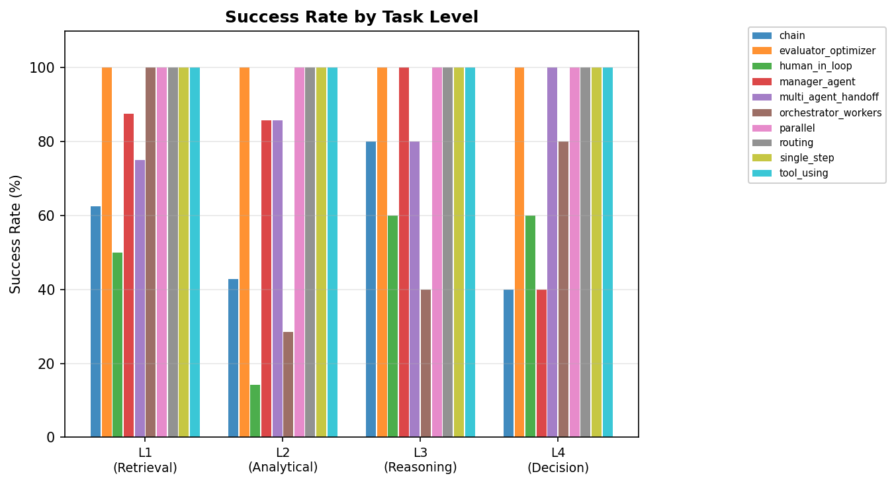
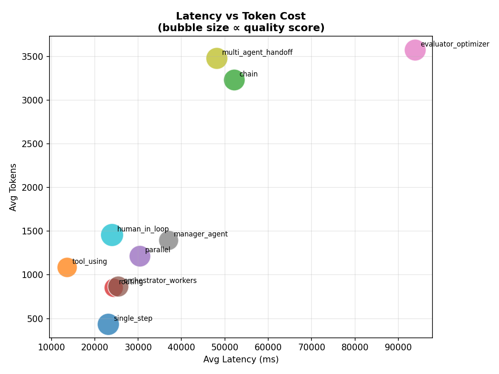
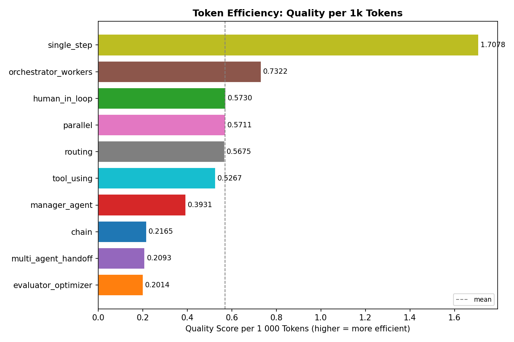

A controlled experiment measuring completion rate, answer quality, tool accuracy, and latency across every major agentic architecture — on the same dataset, with the same LLM.
Ranked by composite score (success rate, quality, tool accuracy). Run with llama3.1:8b via Ollama on a local M1 Pro 16 GB.
| Rank | Workflow | Completion | Quality | Latency | Tokens | Tool Acc. |
|---|
Completion = workflow produced a non-empty answer. Quality = LLM-as-judge score 0–1 against ground truth. Tool Acc. = fraction of tool calls that succeeded.
At 13,581 ms avg, the ReAct loop was 7× faster than evaluator-optimizer. Single-pass patterns have a natural latency edge.
Score 0.836 — but only 44% completion. Human checkpoints filter out poor answers before they're returned. Quality and coverage trade off.
438 tokens avg — 8× cheaper than evaluator-optimizer. A well-prompted single LLM call often beats complex pipelines on L1/L2 tasks.
Simple patterns close the gap on L1/L2. On L3/L4 reasoning and decision tasks, multi-agent architectures pull ahead on quality.






All 10 workflows share the same LLM, tools, dataset, and judge. The only variable is the workflow architecture.
"What is total revenue for Hardware in March 2024?"
"What is the month-over-month revenue trend for 2024?"
"Why did the payment success rate drop in March 2024?"
"Should we raise prices on high-margin products or focus on volume?"
Dataset: SQLite business database (customers, orders, products, inventory, payments, revenue) + ChromaDB vector store for policy documents.
Tools available: sql_query · csv_reader · vector_search · calculator · python_analysis
Judge: LLM-as-judge scores each answer 0.0–1.0 against ground truth using the same model.
One LLM call. No tools. The baseline.
ReAct loop: model selects and calls tools iteratively until it has enough information.
Four deterministic stages: decompose → retrieve → analyse → synthesise.
A classifier decides which specialist handler to invoke for each task type.
Multiple independent sub-queries run concurrently via asyncio.gather; results merged.
Central orchestrator fans out to specialised worker agents in parallel.
Generate → Evaluate → Optimize self-refinement loop with early stopping.
Manager supervises specialist sub-agents sequentially with active output review.
Retrieval → Analysis → Synthesis, each step handled by a specialist agent.
Checkpoints pause execution for human approval at plan and answer review stages.
Based on benchmark results — pick the pattern that matches your constraints.
| Situation | Best pattern | Why |
|---|---|---|
| Simple lookups, low latency budget | single_step | Zero overhead, 100% completion |
| Need external data or tools | tool_using | ReAct is battle-tested, fastest (13,581 ms) |
| Predictable pipeline, auditability required | chain | Deterministic stages, easy to debug |
| Mixed task types in one system | routing | Avoids one-size-fits-all cost |
| Parallel data gathering | parallel | asyncio.gather saves wall-clock time |
| Complex L3/L4 tasks | orchestrator-workers / multi-agent handoff | Specialisation helps on hard tasks |
| Quality is paramount, latency is flexible | evaluator_optimizer | Self-refinement raises the quality ceiling |
| High-stakes decisions | human_in_loop | Highest quality (0.836); humans catch edge cases |
Run the full benchmark locally in minutes.
# Clone and install git clone https://github.com/surabhi7pradhan/agent-workflow-analysis cd agent-workflow-analysis python -m venv .venv && source .venv/bin/activate pip install -e ".[dev]" # Configure (Ollama recommended — no API key needed) cp .env.example .env # Set LLM_PROVIDER=ollama, LLM_MODEL=llama3.1:8b in .env ollama pull llama3.1:8b # Run the full benchmark python -m scripts.cli run # Generate plots, analysis, and blog post python -m scripts.cli plot python -m scripts.cli analyze python -m scripts.cli blog
Supports Ollama (local), Anthropic, OpenAI, and Groq — swappable via a single config key.